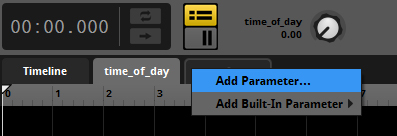
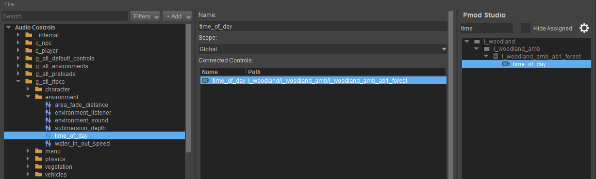
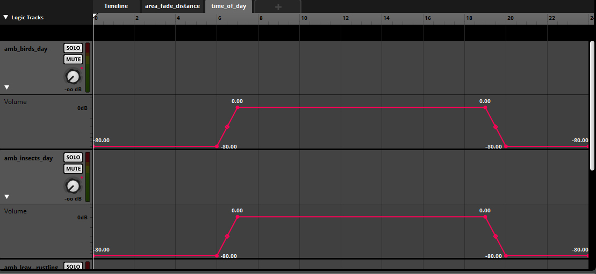

Обзор
В этом уроке объясняется, как создать дневной и ночной цикл с помощью FMOD Studio и CRYENGINE.
Настройка времени суток в FMOD Studio и CRYENGINE
CRYENGINE автоматически отправляет Время суток значение (в 24-часовом формате) для аудиосистемы. Однако для того, чтобы CRYENGINE получил его, необходимо создать соответствующую аудиосистему RTPC в редакторе элементов управления звуком. Кроме того, эта аудиосистема RTPC должна называться time_of_day и его необходимо подключить к параметру FMOD Studio.
Настройка времени суток в FMOD Studio
Чтобы настроить время суток в FMOD Studio, добавьте параметр с именем time_of_day к звуковому событию, на которое должно повлиять время. Диапазон должен быть от 0 до 24, чтобы он соответствовал тому же диапазону, что и время суток внутри CRYENGINE.

Соединение времени суток в FMOD Studio и CRYENGINE
После создания параметра вы можете открыть Редактор управления звуком в CRYENGINE и подключите FMOD Studio Control к контроллеру аудиосистемы.

Создайте динамическую атмосферу в FMOD Studio
Теперь вам нужно создать настройку в FMOD Studio, которая будет использовать недавно подключенный time_of_day параметр.
На изображении ниже показан пример настройки, при которой птицы и насекомые слышны только в течение дня с использованием автоматизации громкости.

После того, как вы успешно создали настройку Ambient в FMOD Studio, обязательно заново создайте свои звуковые банки, как описано. здесь.